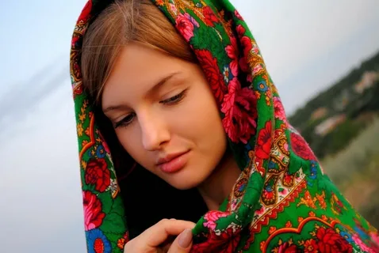
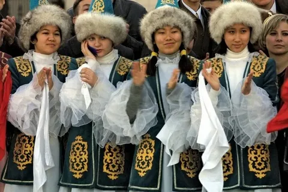
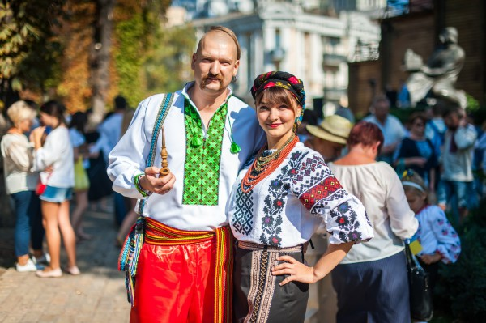
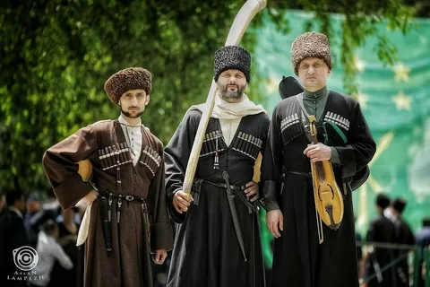
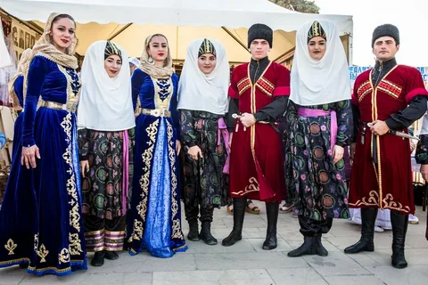
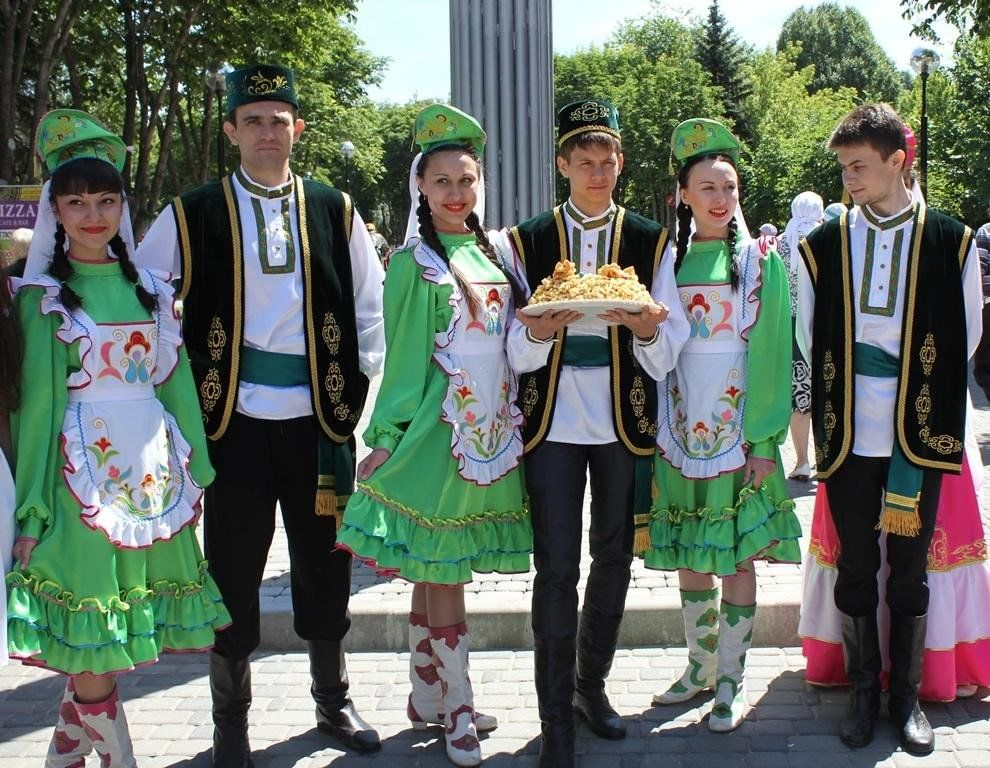
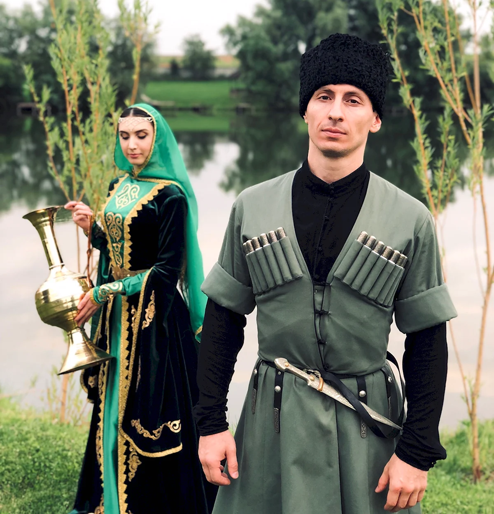

На территории современного Волгограда и его окрестностей проживали и продолжают проживать различные народы, сформировавшие богатое культурное и историческое наследие региона.
Историческое развитие региона
Древние времена
Истоки заселения региона восходят к древним племенам скифов, сарматов и местных народов, которые занимались скотоводством, земледелием и ремеслом. Эти племена оставили богатое археологическое наследие в виде курганов, памятников и предметов быта.
Казачество
В XVI–XVII веках на этих землях активно развивалось казачество. Казачьи станицы служили сторожевыми постами и защитой границ России. Казачьи общины сыграли важную роль в освоении и защите южных территорий, вели промыслы, воевали и участвовали в создании местной культуры.
Народы, проживавшие в XX веке
В советское время в регионе сформировались многокультурные сообщества. Здесь проживали представители различных народов: русские, казахи, украинцы, адыги, калмыки, чеченцы, ингуши и другие. Эти народы сохраняли свои традиции, язык и ремесла, активно участвовали в развитии региона.
Народы Волгоградской области

Русские
Населенность: около 2,5-3 миллионов человек
Более 80% населения региона
Местоположение: Основные населённые пункты — Волгоград, Краснослободск, Волжский и окружающие районы.
Традиционные ремесла:
- Ткачество, плетение, кузнечное дело — традиционные ремёсла, передаваемые из поколения в поколение
- Художественная обработка дерева и металла — изготовление предметов быта, икон, украшений, посуды
- Создание традиционной одежды и вышивки — использование ярких узоров и техник вышивки
- Пчеловодство — производство мёда и воска, важное для питания и медицинских целей
- Плотницкое и столярное дело — создание мебели, деревянных домиков, лодок

Казахи
Населенность: примерно 10-15 тысяч человек
Местоположение: В основном в южных районах области, где сохраняются казачьи станицы и казахские поселения.
Традиционные ремесла:
- Кочевое скотоводство — основа их традиционного хозяйства
- Производство национальных юрт и кожаных изделий
- Изготовление ковров и текстиля — используют шерсть для создания украшений и одеял
- Ткачество и вышивка — создают традиционные орнаменты для одежды
- Изготовление национальных музыкальных инструментов — шемейки, домбры

Украинцы
Населенность: около 20-30 тысяч человек
Местоположение: В основном в городах и селах, расположенных вдоль Волги и в пригородных районах.
Традиционные ремесла:
- Ткачество и вышивка — славятся вышитыми рушниками, платьями и одеждой
- Гончарное дело — изготовление глиняной посуды, утвари, декоративных изделий
- Ремесло солений и консервирования продуктов — сохранение продуктов для зимы
- Изготовление деревянных изделий и мебель — резьба по дереву
- Плетение корзин и изделий из лозы — для хозяйственных нужд и украшений

Адыги (черкесы)
Населенность: примерно 5-8 тысяч человек
Местоположение: В основном в южных районах региона, в близости к Кавказским горным районам.
Традиционные ремесла:
- Ковроткачество и ткачество шерсти — создание ковров, покрывал и тканей
- Изготовление национальной одежды и головных уборов — использование шерсти и кожи
- Ковка металлов — изготовление ножей, украшений и оружия
- Ремесло по изготовлению кожаных изделий и обуви — ремни, сумки, обувь
- Изготовление традиционных музыкальных инструментов и украшений

Кумыки
Населенность: около 3-5 тысяч человек
Местоположение: В южных и юго-восточных районах региона, в степных и полупустынных зонах.
Традиционные ремесла:
- Животноводство — содержание овец, коз, лошадей
- Производство шерстяных тканей и ковров — для одежды и домашнего обихода
- Изготовление кожаных изделий, кумыковские ремесла — обувь, сумки, ремни
- Ремесла по обработке тканей и одежды — ткачество, вышивка
- Ремесла в области охоты и рыболовства — изготовление орудий и снастей

Татары
Населенность: примерно 10-15 тысяч человек
Местоположение: В основном в районах, близких к Волгограду и в степных регионах.
Традиционные ремесла:
- Ткачество и вышивка — создание тканей для одежды, одеял и ковров
- Производство национальных ковров и тканей — ручная работа, использующая яркие красители
- Гончарное дело — изготовление посуды, декоративных изделий
- Изготовление ювелирных украшений и металлических изделий — серебряные и золотые украшения
- Ремесло по изготовлению национальной одежды и головных уборов

Чеченцы и ингуши
Населенность: около 3-5 тысяч человек
Местоположение: В южных приграничных районах, ближе к Кавказу.
Традиционные ремесла:
- Ковка металлов — создание ножей, украшений, оружия
- Изготовление кожаных изделий и ремней — для одежды и хозяйственных нужд
- Ткачество и вышивка национальных тканей — создание красивых и практичных предметов одежды
- Изготовление деревянных предметов и мебели — резьба по дереву
- Ремесло по изготовлению музыкальных инструментов и традиционных украшений
Современность
Сегодня в Волгограде и области продолжают сосуществовать разные этнические сообщества. Они вносят значительный вклад в культурное разнообразие региона, сохраняют традиционные ремесла, праздники и обычаи. В регионе проводятся мероприятия, укрепляющие межнациональное согласие и дружбу.